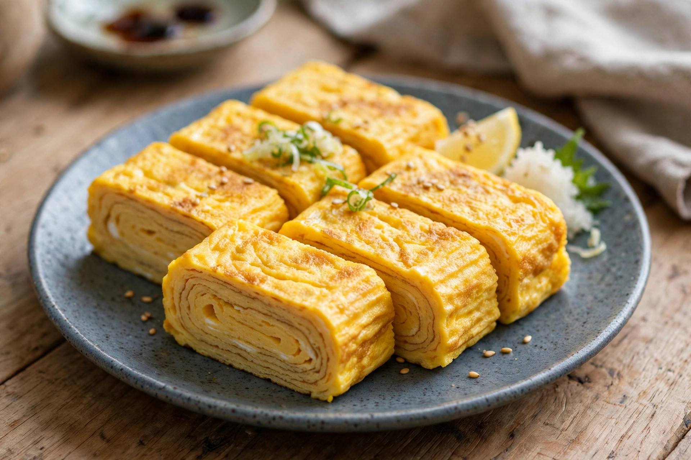

From Wikipedia, the free encyclopedia
| Tamagoyaki | |
|---|---|
 | |
| Type | Omelette |
| Place of origin | Japan |
| Main ingredients | Eggs, sugar, soy sauce, dashi, mirin |
Tamagoyaki (卵焼き, literally "grilled egg") is a Japanese omelette made by rolling together several thin layers of seasoned beaten egg. It is traditionally cooked in a rectangular omelette pan called a makiyakinabe. Tamagoyaki is a common item in Japanese breakfasts, bento boxes, and as a topping for sushi.
Eggs are beaten with sugar, salt, soy sauce, and often dashi and mirin. A thin layer is poured into the greased hot pan; as it sets, it is rolled to one end of the pan, the pan is re-oiled, another layer is poured beneath and around the roll, and the process repeats until a thick, layered log forms. The finished omelette is sliced into pieces revealing concentric layers.
Sweetened tamagoyaki is favoured in the Kantō region around Tokyo, while the Kansai style is saltier and flavoured mainly with dashi. Dashimaki tamago, made with a higher proportion of dashi, has a softer, juicier texture. In sushi restaurants, tamagoyaki is sometimes bound with shrimp or yam to give the firm, custardy texture of gyoku.